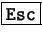
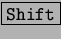
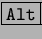
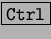

Next: Rotación e inclinación de
Up: StarDraw: Creador de dibujos
Previous: Posición de objetos
Índice General
Arrastrando los manejadores de un objeto se puede cambiar su tamaño, y
están disponibles estas posibilidades:
- Si se pulsa  se anula el cambio de tamaño.
- Si se arrastra pulsando , se mantiene la proporción
de las dimensiones.
- Si se arrastra pulsando , el cambio se hará respecto
al centro.
- Si se arrastra pulsando , el tamaño cambiará en
saltos de 0,25 cm.
Sin embargo, el método más preciso es elegir en el menú [Formato]
la opción [Posición] y tamaño, para ver el cuadro de diálogo
Posición y tamaño, en el que se elige la ficha Tamaño, que se ve a la
derecha.
- Las nueve casillas de opción permiten elegir qué punto
quedará fijo durante el cambio de tamaño.
- Si se marca la casilla de verificación Igualar, las dimensiones
siempre cambiarán respetando la proporción. Si el usuario cambia una,
el programa calcula la otra.
Proyecto Cursos - LuCAS - http://lucas.hispalinux.es/htmls/cursos.html